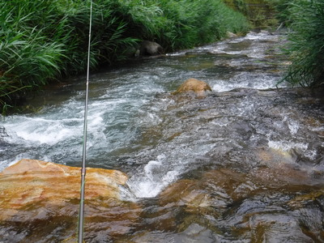
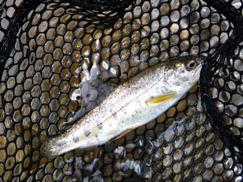
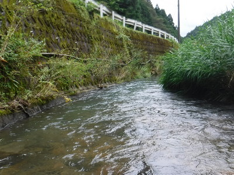
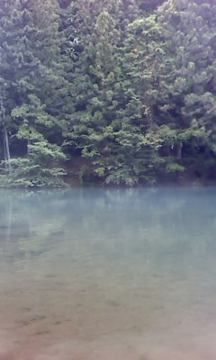
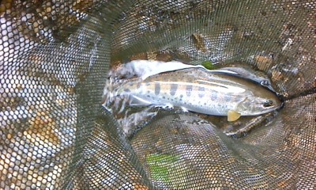
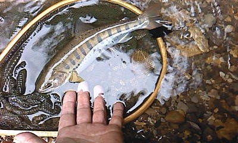

釣行日誌 故郷編
2019/07/21 ニンフの愉しみ
今日も叔父に抜け駆けして１人車を走らせる。10時頃田舎町に着いて、こないだの販売所で入漁券を買う。
いそいそと、かつしっかり渓に目を配りつつ農道を奥へと進んでいくと、何と先行者が！ 釣法は分からなかったが、若い釣り人が岸辺に立っているのが見えた。とりあえず上流に向かう。
この間、虹鱒の出たポイント上流のナメ滝から、フローティングミノーで釣り下って行く。良さそうなポイントが続くが、出て来たのはアブラハヤが１尾のみだった。
あまり魚影が見られないので、第１ラウンドは１時間ほどで止め、ミッチェル409がイマイチ不調ということもあり、車に戻って交換することに決めて、田んぼ沿いの畦道をゼイゼイと息をつきながら登って行く。
その途中、草刈りのおじさん（おそらく僕より若い）が休憩していたので声を掛けて立ち話をする。
「釣れんらぁ～？」
「出ませんねぇ.....（笑）」
おじさんの話では、一昨年、この下流で子グマが捕まり、隣の県へ放たれたとのこと。また、携帯電話のアンテナが出来て、この集落でも通話が出来るようになったことが分かった。携帯が繋がったのはありがたいが、子グマ（たぶん＋母グマ）には出会いたくないものだと、本日の無事を祈りつつおじさんに挨拶をして、下流へ移動する。
今朝方、先行者の車が停めてあったところまで行くと、もう例の車は無い。それでは、とここから釣り下ることにする。
川に降りてすぐ堰堤の大きな淵がある。出ても良さそうなポイントで、スプーンを沈めて探ってみるが反応無し。そこから釣り下るものの、蜘蛛の巣が流れをまたいで縦横に張り巡らされており、ラインにまとわりついて厄介なこと、この上ない。

荒瀬を逆引きしていると、コツッと反応があり、小さなヤマメ？ が釣れた。ここは本来ならアマゴの生息域なのだが、漁協はヤマメを放流しているのだろうか？

メップスの黒地に黄色点のスピナーに出た。水温を測ってみると、16度であった。
細長い淵に出くわしたので、フローティングミノーをフリーの流し込みで攻めるが無反応。

『ここは、良いポイントだがなぁ.....』
不審に思うが、皆さんに攻められているのだろうと、右岸の葦原を藪漕ぎしようと思い、流れを渉っていると、完璧に修理したはずのウェーダーから浸水してきた。冷たい冷たい！
見晴らしの良い河原に出たので弁当にする。慌てて食べて、また釣りを再開し、ずっと釣り下る。
昔よりも河畔の森がずいぶん成長し、木立が両岸から覆い被さって暗い川になっていた。
ふと、何でも無い瀬でバランスを崩し、右手を石に付いてしまい、掌が痛い。かなり釣り下ったが、全然出ないので第２ラウンドを終わることにして、左岸の道路側の草地を掻き登る。
汗をかきつつ農道を20分ほど歩いて車に戻り、そこからまた１時間ほど走って別の川を目指す。
谷を４つ越え、ようやく着いた目的の空き地に車を停め、今度はフライの支度をする。
いざ、林道を歩き出したら、熊笛、熊鈴、デジカメを忘れたことに気付く。まぁ、大丈夫だろうと、たかをくくってケモノの気配が濃厚な森に歩みを進める。
もはや整備をする人もいない、荒れ果てて山肌から石が崩れ落ちるままになっている危ない林道を上流へ向かい、懐かしのポイントに到着した。
荒い息をしながら慎重に偵察する。魚影は見えないが、こないだルアーをたくさん追ってきたので、居ないことはないだろう。
遠投が必要だと思われたので、４番 8ft のロッドに、４番のWF-F ラインをセットする。
流れ込みに上流から大回りして、抜き足差し足で忍び寄ると、対岸から白サギが飛び立った。直後、流れ込みからマガモが水面を騒がしつつ長い滑走で飛び去っていった。
『オマエら、オレの大事なアマゴちゃんたちを食べるなよ.....』
しばし、流れ込み上流から慎重に観察を続けると、今日もチラホラとライズがある。
まずは季節がら、陸生昆虫をイメージして、グリーンハンピーから試してみる。
無反応.....。
16番のアダムスにチェンジしてキャストしてみる。右奥の覆い被さる木立の際で大きめのライズがある。
『そこか！』
勢い込んで打ち込んでみるが、なぜか無反応。いったいぜんたい連中は何にライズしているのだ？
ドライに無反応だったので、早々にビーズヘッド・フェザントテールとインジケーターによるニンフ釣りに変更する。タナは水面下40cm。
大きめのライズを狙ってキャストするが、白いインジケーターに反応は無い。届いていないのか？
そこここに残されたケモノの足跡を踏みながら、対岸の支流の流れ込みへ移動する。暑い陽ざしの下、弁当の残りを食べ、カロリーメイトで腹ごしらえをする。
まだ１尾も釣れていないが、至福の場所と時間を独り占めする。

細い流れ込みのデルタに慎重にウェーディングして行く。徐々に浸水してくるウエーダーの中の足がめちゃくちゃ冷たい。
正面でライズが起こった。そちらへ投げ込むと、一瞬、インジケーター付近で魚影が反転し、銀色がピカッと光った。背後には杉の木立があるので、苦労して正面の遠くへスティープルキャストで遠投する。
水面に乗ったインジケーターがピクリと引き込まれ、すかさず合わせる。キュンとロッドティップ「のみ」を曲げ、可愛いアマゴがネットに収まった。ううむ、これぞ天然の美しさである。
防水デジカメを忘れたので、ガラケーを防水ポーチから慎重に取り出して写真を撮した。

それから徐々に左（本流の流れ込み方向）に移動して、それらしいライズを狙う。バックスペースが出来たので逆手でロングキャストを試みる。
切り株が突き出ている所から１メートルほど右を狙って打ち込むと、しばらくして白いヤーンがシュポッと消えた。
『よしっ！』
ラインがかなり出ていたので、左右に走り良く引いた。ネットを外してランディングすると、小型ながらコンディションの良いアマゴだった。

今はもう財政難で行けなくなってしまった、管理釣り場で釣る虹鱒1,000尾分の価値がある！と思える野生の１尾であった。
沢の流れ込みに座り、スポーツ飲料で喉を潤しながら、世界で一番幸せな釣り人になった。
林道に戻って、森の迫る岸から深みを狙うが、いかんせんロールキャストが下手で、難しすぎた。ライズは遠くで発生しており、どうあがいてもニンフがそこまで飛ばない。
そうこうしていると、リトリーブして回収途中のニンフにギラッと反応があったが合わせが遅れて乗らなかった。
夢中になって釣っていると、濡れたウェーディングシューズが滑って水中に落ち込んだ。胸のあたりまで水に浸かり、一瞬焦ったが、なんとか足がギリギリ川底に付き、ちょうど手の届くところに木の根があったので、それを掴んで岸によじ登ることが出来た。あわや土左衛門！ という危機一髪を体験してしまった。こりゃ今日はこの辺が潮時だな、と納竿し、熊を恐れつつ車に戻った。
長い夏の日も暮れ、山中の暗がりで着替える。長い帰途は眠かったので、コンビニでコーヒーを買って飲みながらノンビリと運転して、夏の１日が終わった。
釣行日誌 故郷編 目次へ
サイトマップ
ホームへ
お問い合わせ